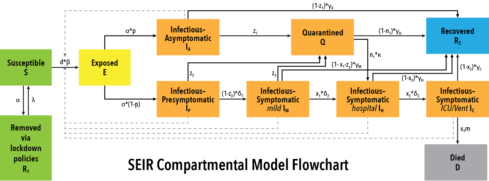

SEIRcast
COVID-19 Forecasting
& Planning Portal
Forecasting demand for hospital services is a critical need for combating the current SARS-CoV-2/COVID-19 pandemic in the US and elsewhere. This web portal provides a toolkit to model transmission and predict resource needs at the county level.
Forecasting and planning tools
Epidemic Tracking
Mathematical models of COVID transmission predict the growth of the expected outbreaks and their inflection and endpoints, informing decision-making.
Hospital Resources
The resource planning interface is tailored for specific hospital groups to compare predicted resource requirements to existing resources at a glance.
Case Map
The number of confirmed infectious cases, as well as predictions of unreported and undetected cases, are mapped by county for a more complete picture of the state.
Epidemic forecasts
The first aim of the model is to forecast the course of the epidemic, its peak and endpoints, and the size of the second wave in the community at large. Understanding this course, and how different intervention measures (lockdowns, social distancing, quarantines) might affect the timing and number of COVID-19 cases and deaths, helps public health and government officials make decisions to best prepare the health system to manage changing demands.

Forecasting medical demand
Forecasting the demand for hospital services, including the availability of drug stocks, ventilators, general beds and critical care units, is a critical need for combating the current SARS-CoV-2/COVID-19 pandemic in the US and elsewhere. Mathematical models of COVID transmission will increasingly play a key role in facilitating these forecasts because of their ability to predict the growth of the expected outbreaks and their inflexion and endpoints as the epidemic progresses in a community.
Our model
Modelers at the Edwin Michael group at Notre Dame have developed a compartmental model, based on a general SEIR (Susceptible, Exposed, Infectious, Recovered) structure, to model the current coronavirus pandemic. The model uses Bayesian Melding methods to build a locally calibrated model that can account for large scale effects, such as population lockdown and eventual lifting of lockdown, while providing fine-grained data that can categorize infected individuals into asymptomatic, pre-symptomatic, mild symptoms, hospitalized, and those requiring critical care. This data is critical in informing government representatives of the effects of events such as lifting lockdown. Learn more
Asking "what if?"
The Edwin Michael group has collaborated with the Center for Research computing at Notre Dame to deploy their model via this web portal. It provides the user with a toolkit to present “what-if” scenarios for analysis. The portal automatically pulls in new data from available public depositories (Johns Hopkins University, JHU, database) to provide improved modelling constraints as new data becomes available on a daily basis. The Epidemic Tracking & Planning interface provides government representatives, such as county planners, with the ability to track confirmed cases and predictions temporally and spatially. The Hospital Resource Planning interface is tailored to specific hospital groups to provide predicted resource requirements that can be compared to existing resources at a glance.